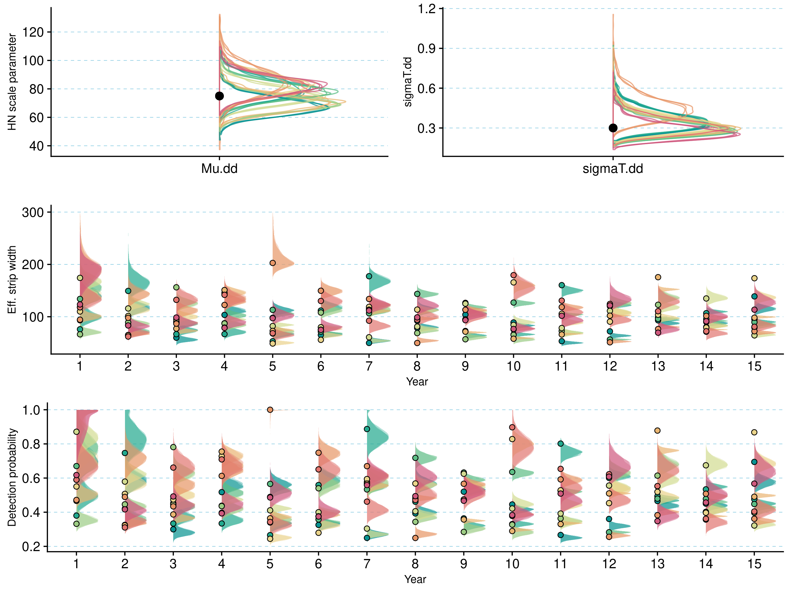
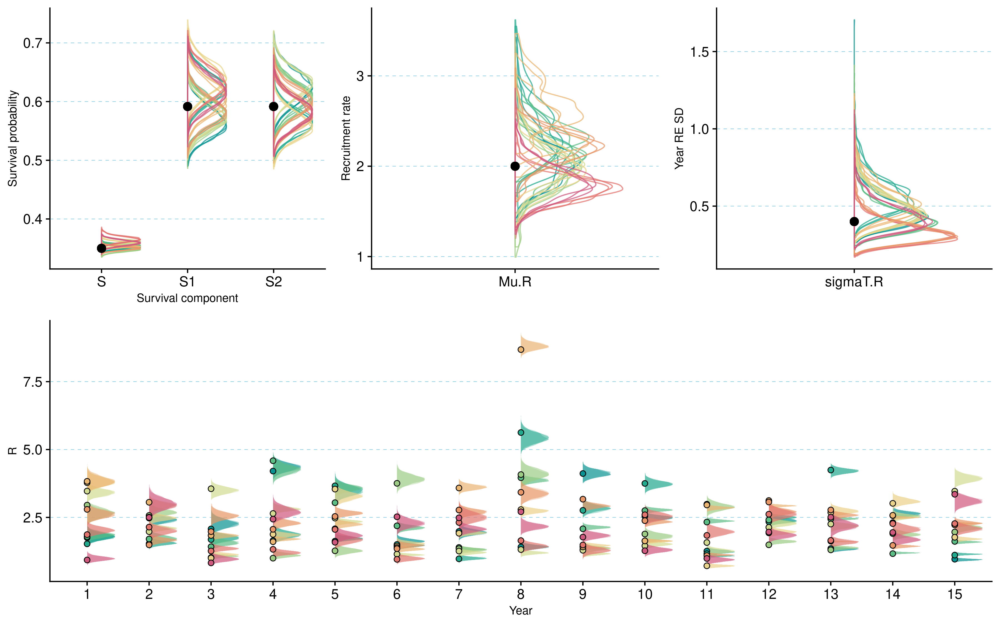

An integrated open population distance sampling approach for modelling age-structured populations
Abstract
Estimation of abundance and demographic rates for populations of wild vertebrate species is a challenging but fundamental issue for both management and research into ecology and evolution. One approach that has been used extensively to estimate abundance of wild living populations is Distance Sampling (DS) methods based on line transect survey data. Historically, DS models were only available as open population models, and did not allow for the direct estimation of changes in abundance through time. The advent of open population formulations based on the DS framework greatly extended the scope of the models, but so far models that estimate both temporal dynamics in abundance as well as the underlying demographic rates has not been implemented. Here, we present an integrated distance sampling approach, that utilize age-structured survey data and auxiliary data from marked individuals to jointly estimate population dynamics and the temporal variation in the demographic rates (recruitment rate and survival probability) that determine the temporal transition. The underlying process model is based on a two-stage transition matrix (\(A_t\)), with matrix entries given by survival probabilities (\(S\)) and time-specific recruitment rates (\(R_t\)). This framework allow us to make full use of the available data, and to effectively integrate the two data sources in an integrated modelling framework. Moreover, demographic rates often respond to environmental variation, and our approach allow us to directly estimate the effect of such environmental covariates on demographic rate variation. We first fit the model to simulated data, to assess it’s ability to recover the underlying population dynamics when the true values are known. Then, we use data from a study of willow ptarmigan (Lagopus lagopus) in Norway as a case study.
1. Introduction
Estimating abundance and demographic rates for wildlife populations is an integral part of basic and applied ecology Williams, Nichols, and Conroy (2002). Over the last few decades, tremendous progress has been made towards this end. This progress is partly driven the development and application of new field data collection methods and approaches, such as citizen science data (ref), camera trap data (ref) and the collection of environmental DNA data (ref). In addition, developments of novel statistical methods alongside decreases in computational costs now allow researchers to estimate abundance and demographic rates in situations where it was not feasible before (ref). Combined, these advances put us in a much better position for estimating quantities needed for population management (Williams, Nichols, and Conroy 2002) and indices relevant for large scale policy applications, e.g. Essential Biodiversity Variables (Kissling et al. 2018).
Until recently, joint estimation of population dynamics and demography has relied mostly on data from marked individuals through application of open-population capture-mark-recapture models (Schaub and Kéry 2021). While such methods can provide valuable information for both ecological research and management, collecting the necessary data is typically costly and logistically challenging to implement over large areas. Monitoring focusing on abundance trends over larger areas, on the other hand, are typically based on data from unmarked animals (ref). A common approach for such surveys is to structure data collection around the distance sampling (DS) method. DS has been used for estimating animal abundance in a wide range of contexts and for a variety of taxa (Buckland et al. 2015). One reason for the method’s popularity is that it does not require repeated visits to the same sites for estimating detection probability. This makes DS particularly useful for implementation in participatory monitoring programs, allowing stakeholders to take part in the data collection process.
The most common implementations of DS models have long used close-population formulations, and thus do not allow formulating a process model that projects abundance across years based on estimates of population growth rate (\(\lambda\)) or underlying demographic rates Buckland et al. (2015). In recent years, DS approaches have been extended in many ways, including applications that estimate changes in abundance over time in open populations via a hidden state model representing population dynamics (Moore and Barlow 2011; Sollmann et al. 2015). This has greatly extended the potential of DS approaches for studying ecological dynamics across time and space. However, while these latter frameworks may allow to accurately quantify population changes, they typically provide little information on the drivers of these changes, i.e. the underlying vital rates. In fact, if the data does not contain information about the age (and/or sex-) structure of the surveyed population, there is no straightforward way to estimate demographic rates from such data. On the contrary, if age (and sex) of detected individuals can be determined, this information can be used to provide information on recruitment rates and survival probabilities. Nilsen and Strand (2018), for example, used a model based on harvest statistics and observations of population age structure to estimate population abundance and demographic rates without the need for any additional data from marked individuals.
Concurrent with the development of more sophisticated DS models, another group of models has emerged and rapidly gained popularity, not least for their ability to disentangle demographic processes underlying population dynamic: integrated population models (IPMs, Schaub and Kéry 2021). Through joint analysis of multiple datasets, IPMs allow simultaneous estimation of population size and composition, as well as all vital rates that form part of an underlying age- or stage-structured population model. Since both DS models and IPMs estimate population size/density, a combination of the two frameworks has the potential to provide good estimates of both population- and demographic parameters by maximizing knowledge gained from transect surveys by augmenting them with other available data (e.g. Schmidt and Robison 2020).
In this study, we present a new IPM (IDSM, integrated distance sampling model) which integrates data from line transect distance sampling survey data and survival data from marked birds. The model’s core is a stage-structured matrix population model that projects population size from one time step to the next based on underlying survival and recruitment rates. Below, we first present the model and assess its robustness and performance through application to simulated data. We then apply the model to real data collected from a willow ptarmigan (Lagopus lagopus) study in Central Norway. Because demographic rates are often affected by environmental covariates (e.g. rodent abundance in the case of willow ptarmigans), we also illustrate how such covariates can be included in the modelling framework.
2. Methods
2.1 An integrated distance sampling model
Our open population integrated distance sampling model (IDSM) consists of two major components: a latent structured population model and a set of likelihoods for data originating from distance sampling surveys and auxiliary survival monitoring. In the example case, these auxiliary data come from a radio-telemetry study, but in principle other types of capture-recapture data can also be used.
2.1.1 Age-structured population model
The population model follows a post-breeding census and includes two age classes: juveniles (young of the year) and adults (> 1 year of age, Figure 1). This structure is inspired by earlier models for our focal species, the willow ptarmigan (+ref), and is commonly used for populations of passerine and game birds (Williams, Nichols, and Conroy 2002; Schaub and Kéry 2021). In the context of our willow ptarmigan case study (see below), the census falls into late summer and coincides with the annual distance-sampling survey in August.
Both juveniles and adults survive from year \(t\) census to year \(t+1\) census with survival probability \(S_t\). As ptarmigan can reproduce already as 1-year old, all survivors then produce offspring in late June which recruit into the population as juveniles just prior to the census in year \(t+1\) according to a recruitment rate \(R_{t+1}\). The changes in densities (numbers) of juveniles and adults in the population, \(D_{juv}\) and \(D_{ad}\), can thus be expressed as
\[ \begin{aligned} D_{juv, t+1} & = D_{ad,t+1} * R_{t+1} \\ D_{ad, t+1} & = S_t * (D_{juv,t} + D_{ad, t}) \end{aligned} \]
or, alternatively, in matrix notation as
\[ \left[ \begin{array}{} D_{juv,t+1} \\ D_{ad,t+1} \end{array} \right] = \left[ \begin{array}{cc} S_t*R_{t+1} & S_t*R_{t+1}\\ S_t & S_t \end{array} \right] \left[\begin{array}{} D_{juv,t} \\ D_{ad,t} \end{array}\right] \]
Note that recruitment rate \(R\) is defined as juveniles/adult (not juveniles/female). We also make the simplifying assumption that there is no age- or sex-dependence of vital rates, but this assumption could be relaxed by including additional auxiliary data (Israelsen et al. 2020; Sandercock et al. 2011).

2.1.2 Likelihoods for distance sampling data
The implementation of the modelling framework we present makes three assumptions about the distance sampling survey: 1) the survey consists of line transects, 2) animals may be detected alone or in groups, and 3) juveniles and adults can be distinguished during surveys. These assumptions are inspired by our willow ptarmigan case study (details below). Our model includes three likelihoods for different components of the age-structured distance sampling data. First is the likelihood for the perpendicular detection distances from line transect, \(y\), which are linked to distance-dependent detection probability \(p\) through a half-normal detection function:
\[ \begin{equation} p = exp(-\frac{y^2}{2\sigma^2}) \end{equation} \] where \(\sigma\) is the half-normal detection parameter. We assumed \(\sigma\) to vary among years (index \(t\)) but not between transect lines or animal group size. Following Moore and Barlow (2011), the resulting \(\sigma_t\) can be used to calculate effective strip width (\(esw_{t}\)) and, consequently, average detection probability per line transect with a truncation distance \(W\) according to:
\[ \begin{aligned} esw_t & = \sqrt{\frac{\pi * \sigma_{t}^2}{2}} \\ \hat{p_t} & = esw_t/W \end{aligned} \] The average detection probability \(\hat{p_t}\) is an integral part of the second data likelihood which relates the observed number of animals in each age class \(a\), \(obsN_{a,j,t}\) (\(j\) = transect) to the corresponding true number per transect, \(N_{a,j,t}\):
\[ \begin{equation} obsN_{a,j,t} \sim Poisson(\hat{p_t}*N_{a,j,t}) \end{equation} \] \(N_{juv,j,t}\) and \(N_{ad,j,t}\) are then linked back to the population model by converting them to densities through multiplication with \(2L_{j,t}W\) (where \(L_{j,t}\) is length of transect \(j\) in year \(t\), and \(W\) is the truncation distance).
The third data likelihood focuses on the counts of adults (\(obsAd_{j,t}\)) and juveniles (\(obsJuv_{j,t}\)) observed during the distance sampling surveys and links them to year-specific recruitment rate:
\[ \begin{equation} obsJuv_{j,t} \sim Poisson(R_t*obsAd_{j,t}) \end{equation} \]
2.1.3 Likelihood for radio-telemetry data
The final likelihood is for the auxiliary telemetry data. It is set up under the assumption of perfect detection, and hence known fates, of animals bearing transmitters and links the numbers of animals released at the start of season \(k\) of year \(t\) to the number of survivors at the end of the same season:
\[ \begin{equation} survivors_{k,t} \sim Binomial(released_{k,t}, Sk_t) \end{equation} \] Here, \(Sk_t\) is the seasonal survival probability, and annual survival probability, \(S_t\) is calculated as \(S1_t * S2_t\).
2.1.3 Hierarchical models with time-variation in parameters
Vital rates (survival probabilities \(S\), recruitment rates \(R\)), detection parameters (half-normal detection parameters \(\sigma\)), and initial population densities can all be modelled as time-dependent in our framework. For both the tests with simulated data and the case study described below, we implemented log-normally distributed random year effects on all parameters except survival, which was set to be constant. In the case study, we additionally included an effect of rodent occupancy (see details below) on log recruitment rates, resulting in the following model:
\[ \begin{equation} log(R_t) = log(\mu_R) + \beta*RodentOcc_t + \epsilon_t \end{equation} \] where \(\mu_R\) is the baseline recruitment rate, \(\beta\) the slope of the effect of rodent occupancy, and \(\epsilon_t\) the normally distributed random effects.
2.2 Model testing with simulated data
We assessed the model’s overall performance and ability to estimate abundance, demographic rates, and detection parameters without bias by testing it on simulated data. We generated a total of 10 simulated datasets in five steps. First, we simulated 15-year time-series of survival and recruitment rates from biologically plausible values for averages of and – in the case of recruitment – among-year variation in demographic rates (survival was held constant across years). Second, we used the yearly demographic rate and realistic initial population densities to simulate stochastic population dynamics in 50 distinct sites. Third, we simulated the grouping of individuals in each site by first determining the expected number of groups in a site (based on the average group size of 5.6 from our ptarmigan data) and then distributing individuals among groups via multinomial trials. Fourth, we assigned a distance from transect line to each group and simulated the line transect survey in all 50 sites across 15 years. Finally, we simulated 5-year time-series of radio-telemetry data (= survival from one year to the next) for a subset of individuals (30 on average) using the simulated survival probabilities for each relevant year. We then fit the IDSM to each of the 10 simulated datasets three times, using distinct seeds for both simulating initial values and initiating and running the MCMC. Model implementation for simulated data tests was largely identical to that for real data and is described in detail below.
2.3 Case study
The willow ptarmigan has a circumpolar distribution (Fuglei et al., 2020), and lives year-round in heterogeneous alpine and artic ecosystems. In Norway, there has been a long-term decline in the willow ptarmigan abundance across more than a century (ref), but in the last few decades abundance trends has fluctuated both in time and space. In Scandinavia, willow ptarmigan is a valued game species (ref), and there have been several long-term research projects devoted to understanding how they respond to environmental variation and harvest management (Israelsen et al. 2020; Sandercock et al. 2011). A key insight from across several study areas is the the annual recruitment rate (i.e. \(R_t\) in our model, as outlined above) is highly variable, and is affected both by spring conditions (Eriksen et al. 2023) and the abundance of small rodents, which constitute alternative prey for common predators (i.e. the Alternative Prey Hypothesis ref). Adult survival show less inter-annual fluctuations (Israelsen et al. 2020), although spatial (and potentially temporal) variation due to e.g. harvest management is evident when comparing across studies (Israelsen et al. 2020).
Our case study was based on an ongoing long-term research project on willow ptarmigan in Lierne municipality in Central Norway (approximately 62.4 degrees north and 13.2 degrees east). The study area is located in a sub-alpine ecosystem, and the landscape is a mosaic of open heath and shrub vegetation (dominated by Ericacea, willow shrub Salix spp., and dwarf birch Betula nana), interspersed with bogs and forest patches (mainly birch Betula spp.). The climate is strongly seasonal, with snow typically covering the ground from October/November through April/May.
From this study system, two datasets were used for the case study:
Data from a line transect survey program targeting willow ptarmigan operated under the natural resources management authorities (2007-2021, ongoing)
Data from an individual-based monitoring programme based on radio collared willow ptarmigan (2015-2021, ongoing)
Line transect survey data were collected in August each year, prior to the annual autumn harvest season, as part of the program “Hønsefuglportalen”. Hønsefuglportalen is a national program for line transect surveys of tetraonid birds, and the effort is directed mainly towards willow ptarmigan habitats. In our case study, we used data from the western part of Lierne municipality. Line transects are surveyed by trained volunteers that use pointing dogs to locate the birds. When located, the geographical coordinate, perpendicular distance from the sampling line, the number of birds in the group, as well as the age (juvenile or adult) and sex of the birds are recorded. As the surveys are conducted in early August, juveniles can be distinguished from adults by their smaller body size. Nevertheless, mis-identification can occur, and in addition a proportion of the birds are registered as “unknown” age and/or sex. Since 2019, data has been collected through a mobile app tailormade for this project . Before 2019, field workers reported their data through a dedicated web portal. After data are collected and reported, they undergo several steps of quality control: first by local contacts and subsequently by personnel at the Norwegian Institute for Nature Research (NINA). The data are then standardized based on the Darwin-Core standard (ref), and made publicly available as a sampling-event data set published through GBIF (Nilsen et al. 2023). For additional description of the data collection procedures, see (Bowler et al. 2020); [Kvasnes, Pedersen, and Nilsen (2018)](Nilsen et al. 2023).
The individual longitudinal study based on radio collared willow ptarmigan was conducted in 2015-2020. Each winter (in February-March), willow ptarmigan were located at night using snowmobiles and large hand nets with prolonged handles, as described in (Israelsen et al. 2020). To prevent birds from flying off before the field personnel were close enough to capture them, a high-powered head lamp was used to dazzle the birds. After capture, birds were placed in an opaque bag to reduce stress. They were then fitted with a uniquely numbered leg ring (~ 2.4g) and a Holohil RI-2BM or Holohil RI-2DM radio transmitter (~ 14.1g) and subsequently released. The radio transmitters had an expected battery lifetime of 24 months (RI-2BM) or 30 months (RI-2DM), and included a mortality circuit that was activated if a bird had been immobile for 12 hours. We monitored the birds throughout most of the year by triangulation from the ground at least once a month for 10 months of the year (February – November) by qualified field personnel. If a mortality signal was emitted from a transmitter, we attempted to recover it as soon as possible to determine cause of death. A number of birds dispersed out of the main study areas and was thus out of signal range for field personnel on the ground. To avoid loss of data, we conducted aerial triangulation using a helicopter or airplane three times a year (May, September and November) in the years 2016-2020.
2.4 Bayesian model implementation
We implemented the model in a Bayesian framework using NIMBLE version 1.0.1 (Valpine et al. 2017) in R version 4.3.1 (R Core Team 2023). The likelihood for line transect observation distances was set up using a custom half-normal distribution developed by Michael Scroggie as part of the “nimbleDistance” package (https://github.com/scrogster/nimbleDistance). We used non-informative uniform priors (with biologically reasonable boundaries where possible) for all parameters. We assumed constant survival and time-varying recruitment rate in models fit to both simulated and real data.
For the model fits to simulated and real data we ran 3 and 4 MCMC chains with NIMBLE’s standard samples for 500k and 100k iterations, respectively. 300k and 40k and thereof were discarded as burn-in prior to thinning with factors 5 and 20 , leaving us with 40k and 3k posterior samples per chain (total of 120k and 12k samples per run), repectively.
3. Results
3.1 Model performance on simulated datasets
Posterior distributions for parameters estimated in three model fits to each of 10 simulated data sets are shown in Figure 2 and Figure 3. Overall, the IDSM was able to corretly estimate both detection parameters and demographic rate parameters from all 10 simulated datasets without any systematic bias. The replicate runs for each dataset resulted in very similar posterior distributions, demonstrating that the models converged towards the same posterior distributions irrespective of starting values. Estimates of population sizes / densities were also adequate, and are presented in the Supplementary Materials (see folder SimCheck_byDataSet).


3.2 Case study on willow ptarmigans in Central Norway
Having evaluated the overall performance of our model on simulated data, we used data from our case study in Lierne as a case study to estimate abundance, vital rates and detection probabilities from a real-world data set. Ptarmigan population density increased markedly across the study period, from < 10 ptarmigan / \(km^{2}\) in 2007 to > 35 ptarmigan / \(km^{2}\) in in 2021 (Figure 4). The increase was most distinct from 2016 and onward.

Average survival probability for August - January (\(S_1\)) was estimated at 0.46 (95% C.I = 0.42 - 0.51) while average survival probability for February - July (\(S_2\)) was estimated as 0.64 (95% C.I = 0.59 - 0.7) (Figure 5 A). Annual survival probability \(S\), given by the product of \(S_1\) and \(S_2\), was estimated at 0.3 (95% C.I = 0.29 - 0.31), Figure 5 A).
Recruitment (\(R_t\)) was allowed to vary across years (see model specification), and estimates displayed large inter-annual variability (Figure 5 C, Figure S1). While the mean (baseline) recruitment \(\mu_R\) was estimated as 2.9 (95% C.I = 2.5 - 3.4) the yearly recruitment rates ranged from 1.2 in year 2012 to 4.9 in year 2007.
Given the available data, the IDSM was not able to estimate a clear effect of small rodent abundance on ptarmigan recruitment (slope-paramater for the z-standardized rodent occurrence data = 0.037 ; 95% C.I. = -0.216 - 0.248).

Discussion
- In general, the model does a very good job in recreating the underlying parameters when fitted to simulated data where the true values are known. For the simulated data, a relative wide range of parameter values were allowed, and we did not detect any particular problems or biases with respect to this variation in the underlying parameters.
- Both simulated data tests and real data application have shown that mixing is suboptimal for the average recruitment rate parameter (Mu.R). Future work should perhaps look into optimizing sampling? (For biological interpretation that is not a big problem as the yearly recruitment rate estimates are fine… but have to keep in mind when interpreting)
- The fact that this formulation allow us to separately estimate the underlying demographic rates (survival and recruitment) is a clear improvement compared to previous open population DS models, as this allow us both to obtain estimates of the rates, but also to assess the effect of environmental variation directly on demographic rates and not just on population growth rate (\(\lambda\)) .
- Nevertheless, we did not detect a clear effect of rodent abundance (indexed by the occurrence of rodents on the transect lines) on recruitment rate. This might be somewhat surprising, given that such a pattern has been reported repeatedly in the literature (see e.g. Bowler et al. (2020)). However, the data on rodent abundance was heavily zero-inflated, and the annual variation in the index was rather small. [A few sentences about fading rodent cycles, and perhaps a weakened link to ptarmigan dynamics]. [Also: a time-series of 15 years is still relatively short, so it is to be expected that we have low statistical power to detect temporal covariate effects –> more years of data, or space-for-time substitution, will help)
- In our process model, the population growth rate (\(\lambda\)) is determined by the survival and recruitment rate in the following way: \(\lambda = S + (S * R)\), creating a dependence between the demographic parameters. If the age ratio in the data are biased or contain frequent misclassifications, this is likely to affect the relative contribution of survival and recruitment to the growth rate. As a test of the phenomena, we also assessed how sensitive the model output was with regard to the treatment of birds classified as “unknown sex and age” by the field personnel (see Methods). In the version presented in the results section, we made the assumption that these birds were in fact juveniles. In an alternative scenario, we discarded all birds classified as unknowns, and rerun the model (Appendix). As expected the estimated population density was virtually unaffected by this decision, whereas the effect on the demographic parameters were somewhat more affected. Thus biases in the age ratio will affect the demographic rates, but not so much the estimated density. Compared to previous studies on ptarmigan, we could have expected a higher survival rate indicating that there is some misclassification in the data with respect to age specification.
- The model is flexible, and can be extended with additional auxiliary data, such as separate data on recruitment rates that could improve the precision of the demographic rate estimates. Another one might be data that allows to distinguish between true and apparent survival. It is also possible to extent the model with additional covariates, to gain a better understanding of how species respond to environmental variation through the effects on vital rates. [See my point above on limited statistical power with 15 years. Maybe could be good to link to the space-for-time substitution idea here and “tease” the extension to multi-area since the monitoring programme, at least for line transects, covers many more areas).
Acknowledgements
We are grateful to field workers that collected the line transect data through the Hønsefuglportalen program. Fjellstyrene i Lierne contributed both to the line transect program and the field work related to the marked willow ptarmigan. Norwegian Environment Agency funded the projects (grant nrs TO BE ADDED). [+ additional people contributing to the various projects]
[Should we thank James for discussions etc.?]